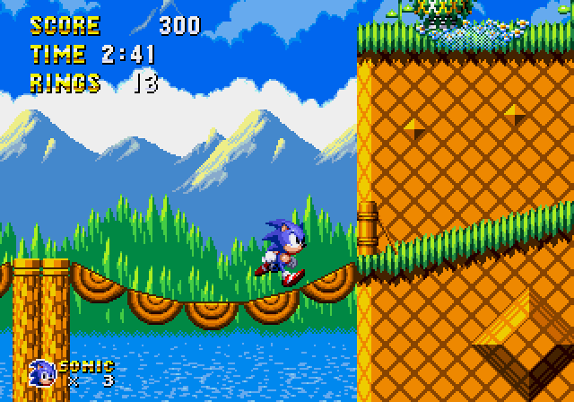

Title screen
Sonic 1: South Island Expedition (formerly Sonic 1 Definitive and Sonic 1: South Island Definitive) is a ROM hack project by RadiantNexus which seeks to re-imagine Sonic 1 for original hardware.
Bridge Zone Act 1
Made with creativity and passion, our visions and goal for this fan work consists of:
Complete layout overhauls.
Entirely revamped art.
Remixed music, "Act 2" mixes of the aforementioned remixes, and many original tracks.
Revamped zone settings from the original MD Sonic 1, 16-bit visions of zones from the 8-bit MS Sonic 1, and 4 new zones based on concept art.
Re-introduction and re-imaginings of scrapped concept elements.
Quality of Life changes to enhance the player experience.
Minibosses, remixed major bosses.
New in-game cutscenes to convey game's original story, similar to S3's cinematics.
Prerendered models, both modeled and traced for use in the title, menus, and certain sprites.
THE MENU(s).
Many new options.
Cool and Wacky Secrets.
Marble Zone Act 1
My contributions included creating the majority of the soundtrack, programming numerous objects, and making improvements to the engine. I was brought on to do music in early 2021 and later started making significant programming contributions in 2023.
Downloads:
Post-SHC 2024 Demo [2.1.2] (Dec 2024)
SHC 2024 Demo [2.1] (Sep 2024)
CGS 2023 Demo [2.0] (Nov 2023)
April Fools 2022 (Apr 2022)
SHC 2021 Demo [1.0] (Oct 2021)
Credits:
GAME DESIGN: KGL, Inferno, Naoto_NTP, BladeOfChaos, MDTravis
LEVEL DESIGN: KGL, Inferno, Naoto_NTP
ADDITIONAL LAYOUT CONTRIBUTIONS: BladeOfChaos, KatKuriN, Michaelwave
CREATIVE DESIGN: KGL, BladeOfChaos, ManiacShard, Naoto_NTP, Michaelwave
PROGRAMMING: ProjectFM, Inferno, Naoto_NTP, Rivet, Giovanni, RandomName
PROGRAMMING ASSISTANCE:, MDTravis, MrLordSith, BladeOfChaos, KatKuriN, KGL
CHARACTER DESIGN: BladeOfChaos, Louplayer, joshyflip
ART: BladeOfChaos, ManiacShard, Louplayer, Michaelwave, joshyflip
ADDITIONAL ART CONTRIBUTIONS: MDTravis, KGL, Naoto_NTP, MrLordSith, KatKuriN, pixelcat, Beta Nexus
MODELING: MrLordSith, MDTravis, Naoto_NTP, R0SE
MUSIC: ProjectFM, LunarCryptik, MDTravis
SOUND DESIGN: MDTravis, KGL
SOUND PROGRAMMING: Naoto_NTP, ProjectFM, MDTravis
SONAR DAC DRIVER: Naoto_NTP
MENU PROGRAMMING: Rivet, Inferno, ProjectFM
TOOLS AND LEVEL ENGINE OVERHAULS: ProjectFM
EXTERNAL ART: ManiacShard, MDTravis
EXTERNAL DESIGN: ManiacShard, KGL, MDTravis
CONCEPTS: Inferno, BladeOfChaos, KGL, MDTravis, ManiacShard, KatKuriN, Michaelwave, Naoto_NTP, Somario
TRANSLATIONS: KrazeeTobi, Beta Nexus
SPECIAL THANKS AND TESTING: UltraRing Team, Chopp, Avery, Saint Nick, Darkn, ScarlyNight, Emneisium, Tydany, Vincent, MiaCDi, EmmaNerd, AurumMighty,
PootisDaMan, Arrisu, The G-Man, Dan, Twanvanb1
TRANSLATIONS: KrazeeTobi, Beta Nexus
ADDITIONAL CODE TAKEN FROM: Vladikcomper, Devon, MarkeyJester, Vincent
PROJECT FOUNDER: Inferno
GAME PLAN: KGL
DEVELOPMENT COORDINATOR: KGL
Related Pages
Soundtrack
SHC 2024 Release Page
CGS 2023 Release Page
SHC 2021 Release Page
RadiantNexus Site
RadiantNexus Discord